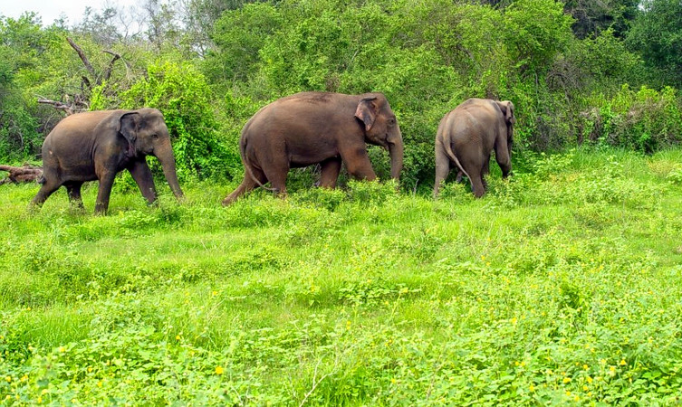

1.bekal fort
1.bekal fort
The 300 years old defensive mechanism which is the largest and well-preserved fort makes it one of the best Kasaragod tourist place. You can get an enthralling view of the mesmerizing Arabian sea from the fort’s observation tower which was once used to fire the cannons!
The impressive strength of the fort brings a herd of tourists to witness the glorious past and be awestruck. Visit an old mosque near this fort to dive deeper into history.
LOCATION: A Half hour away south of Kasaragod at a distance of 16 kilometers, and exact address is Kasaragod Road, PO Bekal Fort, Beside Bekal Fort Railway Station Dist, Bekal, Kerala 671316
TIMIMGS: 8:00 am to 5:00 pm
ENTRY FEES: The entrance fee is INR 5 per person for Indians and INR 100 for foreign nationals.

2.Parappa Wildlife Sanctuary
A paradise for nature lovers and a fine ranked in the list of tourist places in Kasaragod. It is a natural habitat of some underrated fauna like a slow turtle, the prickly porcupine, Malabar hornbill, Slender loris, and the cute wild jungle cat
If wilderness attracts you, this locale is a must visit for some great wildlife photography. Hike around the sanctuary and click around some rare species.
LOCATION: Approximately 50 kilometers away from Kasaragod.
TIMIMGS: 8:00 am to 4:00 pm
ENTRY FEES: none
 3.malom Wildlife Sanctuary
3.malom Wildlife Sanctuary
A blend of magnificent tropical fauna and wildlife, this sanctuary is home to animals like Elephants, Tigers, Bison, Deers and about 200 species of vivid birds, in case bird watching is your forte. If lucky enough you might get a sight of the Cobra, and python.
The flora comprises of some rare herbs and other medicinal plants. Go and explore the wilderness taking sufficient time in hand, as this land has a lot of unexplored yet to be explored in house spots amongst the tourist places in Kasaragod.
LOCATION: 64 kilometers away from Kasaragod approximately two hours journey.
TIMIMGS: 7:00 am to 4:30 pm
ENTRY FEES: INR 20 per adult.
 4.thaikadappuram beach
4.thaikadappuram beach
An ideal locale for a peaceful vacay! If rare and unexplored fauna catches your attention then you must visit this beach in the monsoon season to watch some olive ridley turtles. Watch the sand turn golden and the sun setting with vivid colors.
Just sit in silence and see the wonders nature has to offer or have a frolicking time with your troop at one of the best tourist places in Kasaragod.
LOCATION: Just one hour away from Kasaragod.
TIMINGS:You can visit the beach whenever you want, as it is all time open.
ENTRY FEES: None.